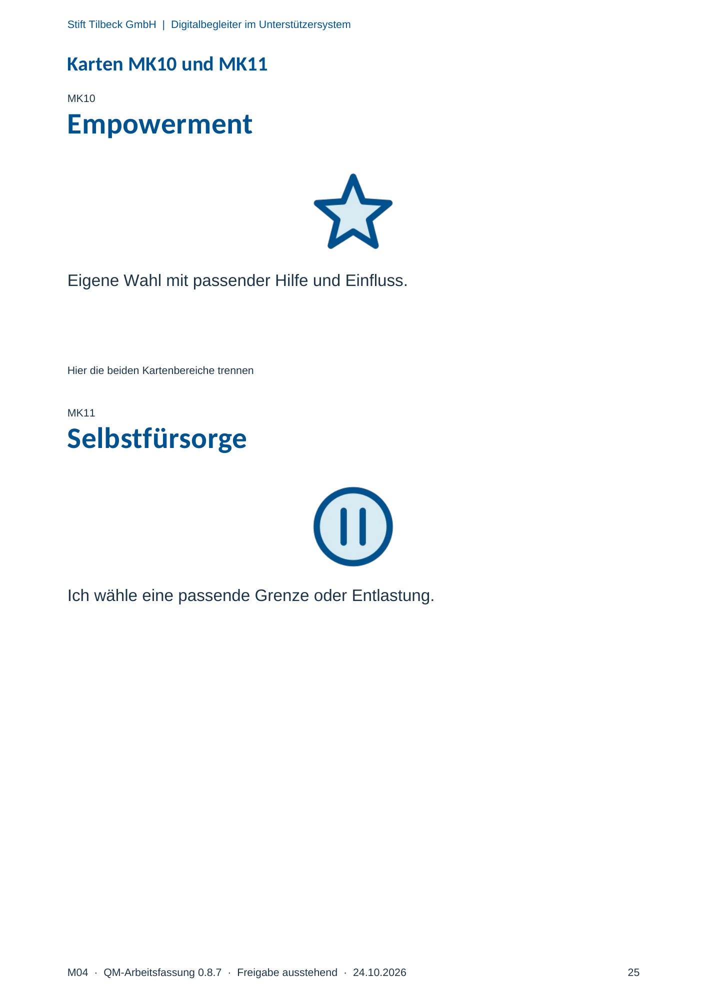

M04 · Originalseite 25
Empowerment
Original-Druckseite mit MK10. Auf derselben Seite stehen außerdem MK11. Diese sind dadurch keine zusätzliche Aufgabe.
Fragen und Ankreuzfelder werden auf dem Ausdruck bearbeitet. Die Lesefassung speichert keine Antworten.
Lesefassung · Seite 25
Stift Tilbeck GmbH | Digitalbegleiter im Unterstützersystem
M04 · QM-Arbeitsfassung 0.8.7 · Freigabe ausstehend · 24.10.2026 25
Karten MK10 und MK11
MK10
Empowerment
Eigene Wahl mit passender Hilfe und Einfluss.
Hier die beiden Kartenbereiche trennen
MK11
Selbstfürsorge
Ich wähle eine passende Grenze oder Entlastung.
Originalseite ansehen
